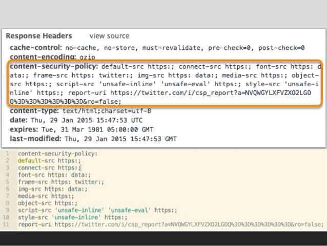
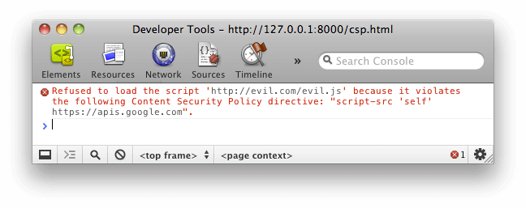
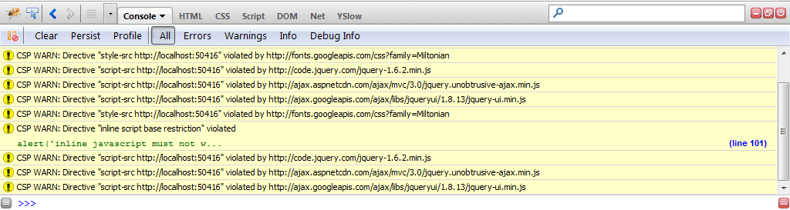
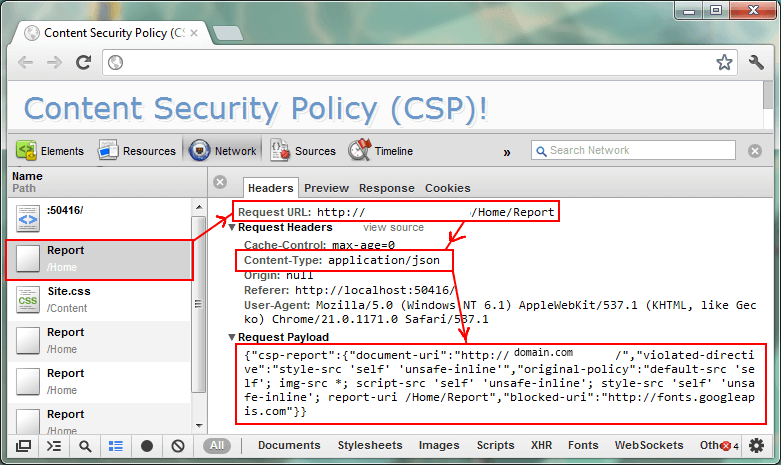

目录
Content-Security-Policy¶
Note
跨域脚本攻击 XSS 是最常见、危害最大的网页安全漏洞。为了防止它们，要采取很多编程措施，非常麻烦。很多人提出，能不能根本上解决问题，浏览器自动禁止外部注入恶意脚本？这就是 “网页安全政策”（Content Security Policy，缩写 CSP）的来历。
简介:
CSP 的实质就是白名单制度，开发者明确告诉客户端，哪些外部资源可以加载和执行，等同于提供白名单。
它的实现和执行全部由浏览器完成，开发者只需提供配置。
作用:
CSP 大大增强了网页的安全性。
攻击者即使发现了漏洞，也没法注入脚本，除非还控制了一台列入了白名单的可信主机。
Syntax:
Content-Security-Policy: <policy-directive>; <policy-directive>
Directives¶
Fetch directives¶
Fetch directives control the locations from which certain resource types may be loaded.
child-src:
Defines the valid sources for web workers and nested browsing contexts loaded using elements such as <frame> and <iframe>.
style-src:
Specifies valid sources for stylesheets.
object-src:
Specifies valid sources for the <object>, <embed>, and <applet> elements.
script-src:
Specifies valid sources for JavaScript.
default-src:
Serves as a fallback for the other fetch directives.
实战-启用 CSP¶
方法:
1. 通过 HTTP 头信息的 Content-Security-Policy 的字段
2. 通过网页的 <meta> 标签
方法1: HTTP 头信息的 Content-Security-Policy 的字段:
Content-Security-Policy: script-src 'self'; object-src 'none';
style-src cdn.example.org third-party.org; child-src https:

方法2: 通过网页的 <meta> 标签:
<meta http-equiv="Content-Security-Policy" content="script-src 'self';
object-src 'none'; style-src cdn.example.org third-party.org; child-src https:">
上面示例说明:
脚本：只信任当前域名
<object> 标签：不信任任何 URL，即不加载任何资源
样式表：只信任 cdn.example.org 和 third-party.org
框架（frame）：必须使用 HTTPS 协议加载
其他资源：没有限制
Note
启用后，不符合 CSP 的外部资源就会被阻止加载。

Chrome 的报错信息。¶

Firefox 的报错信息。¶
限制选项¶
资源加载限制:
script-src: 外部脚本
style-src: 样式表
img-src: 图像
media-src: 媒体文件（音频和视频）
font-src: 字体文件
object-src: 插件（比如 Flash）
child-src: 框架
frame-ancestors: 嵌入的外部资源（比如 <frame>、<iframe>、<embed > 和 < applet>）
connect-src: HTTP 连接（通过 XHR、WebSockets、EventSource 等）
worker-src: worker 脚本
manifest-src: manifest 文件
default-src:
作用:
default-src 用来设置上面各个选项的默认值。
示例(限制所有的外部资源，都只能从当前域名加载):
Content-Security-Policy: default-src 'self'
URL 限制:
网页会跟其他 URL 发生联系，这时也可以加以限制:
frame-ancestors: 限制嵌入框架的网页
base-uri: 限制 <base#href>
form-action: 限制 <form#action>
其他限制:
block-all-mixed-content: HTTPS 网页不得加载 HTTP 资源（浏览器已经默认开启）
upgrade-insecure-requests: 自动将网页上所有加载外部资源的 HTTP 链接换成 HTTPS 协议
plugin-types: 限制可以使用的插件格式
sandbox: 浏览器行为的限制，比如不能有弹出窗口等
report选项¶
report-uri:
需求:
防止 XSS 后还希望记录此类行为
作用:
report-uri 就用来告诉浏览器，应该把注入行为报告给哪个网址
实例:
将注入行为报告给 /my_amazing_csp_report_parser 这个 URL:
Content-Security-Policy: default-src 'self'; ...; report-uri /my_amazing_csp_report_parser;
浏览器会使用 POST 方法，发送一个 JSON 对象:
{
"csp-report": {
"document-uri": "http://example.org/page.html",
"referrer": "http://evil.example.com/",
"blocked-uri": "http://evil.example.com/evil.js",
"violated-directive": "script-src 'self' https://apis.google.com",
"original-policy": "script-src 'self' https://apis.google.com; report-uri http://example.org/my_amazing_csp_report_parser"
}
}

report-uri 实例¶
Content-Security-Policy-Report-Only:
表示不执行限制选项，只是记录违反限制的行为。
注: 必须与 report-uri 选项配合使用
实例:
Content-Security-Policy-Report-Only: default-src 'self'; ...; report-uri /my_amazing_csp_report_parser;
选项值¶
每个限制选项可以设置以下几种值，这些值就构成了白名单:
主机名: example.org，https://example.com:443
路径名: example.org/resources/js/
通配符: *.example.org，*://*.example.com:*（表示任意协议、任意子域名、任意端口）
协议名: https:、data:
关键字'self': 当前域名，需要加引号
关键字'none': 禁止加载任何外部资源，需要加引号
多个值也可以并列，用空格分隔:
Content-Security-Policy: script-src 'self' https://apis.google.com
如果同一个限制选项使用多次，只有第一次会生效:
# 错误的写法
script-src https://host1.com; script-src https://host2.com
# 正确的写法
script-src https://host1.com https://host2.com
script-src 的特殊值¶
Note
注意，下面这些值都必须放在单引号里面。
script-src 还可以设置一些特殊值:
'unsafe-inline'：允许执行页面内嵌的 <script> 标签和事件监听函数
unsafe-eval：允许将字符串当作代码执行，比如使用 eval、setTimeout、setInterval 和 Function 等函数。
nonce 值：每次 HTTP 回应给出一个授权 token，页面内嵌脚本必须有这个 token，才会执行
hash 值：列出允许执行的脚本代码的 Hash 值，页面内嵌脚本的哈希值只有吻合的情况下，才能执行。
nonce 值的例子:
Content-Security-Policy: script-src 'nonce-EDNnf03nceIOfn39fn3e9h3sdfa'
页面内嵌脚本:
<script nonce=EDNnf03nceIOfn39fn3e9h3sdfa>
// some code
</script>
hash 值的例子:
Content-Security-Policy: script-src 'sha256-qznLcsROx4GACP2dm0UCKCzCG-HiZ1guq6ZZDob_Tng='
因为 hash 值相符:
<script>alert('Hello, world.');</script>
注意，计算 hash 值的时候，<script> 标签不算在内。
参考¶
阮一峰, Content Security Policy 入门教程: http://www.ruanyifeng.com/blog/2016/09/csp.html
https://developer.mozilla.org/en-US/docs/Web/HTTP/Headers/Content-Security-Policy